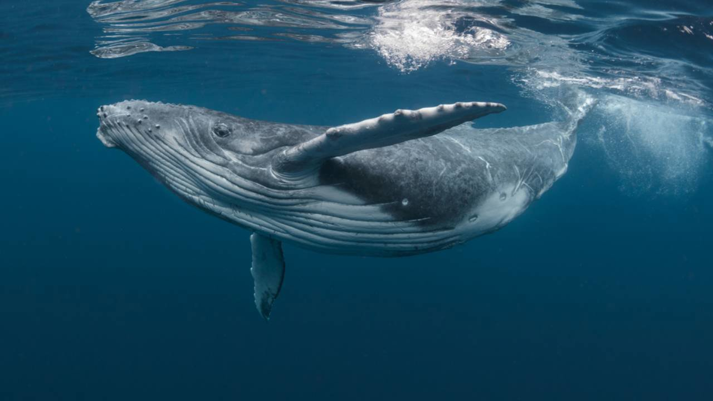

Peces
Los peces marinos son animales acuáticos que viven en ambientes marinos, desde aguas poco profundas hasta las profundidades abisales del océano. Son animales de sangre fría y respiran a través de branquias, que les permiten extraer oxígeno del agua. Hay una gran variedad de especies de peces marinos, con diferentes tamaños, formas y colores. Algunos, como los tiburones y las rayas, tienen esqueletos cartilaginosos en lugar de huesos, mientras que otros, como los peces óseos, tienen esqueletos de huesos.
- Pez payaso
-
 Tiburón blanco
Tiburón blanco
- Atún
-  Ballena
Mamíferos marinos
Los mamíferos marinos son un grupo de animales que incluye especies que viven exclusivamente en el agua, como los delfines, ballenas y focas. Son animales de sangre caliente que han evolucionado para adaptarse a la vida acuática y tienen características únicas, como la capacidad de mantener su temperatura corporal en un ambiente frío y la habilidad de respirar aire a través de pulmones. Estos animales marinos también tienen sistemas de comunicación muy desarrollados, como la comunicación vocal y la ecolocalización, que les permiten comunicarse con otros individuos de su especie y localizar alimentos en el agua. Muchas especies de mamíferos marinos son migratorias y viajan grandes distancias para encontrar alimento, reproducirse y evitar cambios climáticos.
- Delfín
- Foca
- Ballena jorobada
Crustáceos
Los crustáceos son un grupo de diversos animales acuáticos que viven en ambientes marinos y de agua dulce. Incluyen especies como los camarones, las langostas, los cangrejos y los percebes. Tienen un exoesqueleto duro que les protege y les da forma, y se caracterizan por tener varias patas y antenas. Los crustáceos tienen un papel importante en los ecosistemas acuáticos, ya que son una fuente de alimento para otros animales y ayudan a mantener el equilibrio en los ecosistemas marinos. Además, algunas especies de crustáceos son explotadas comercialmente por los humanos, como las langostas y los camarones, y son una importante fuente de ingresos para las comunidades pesqueras.
- Langosta
- Cangrejo ermitaño
- Gamba